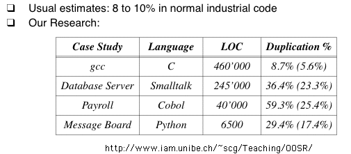
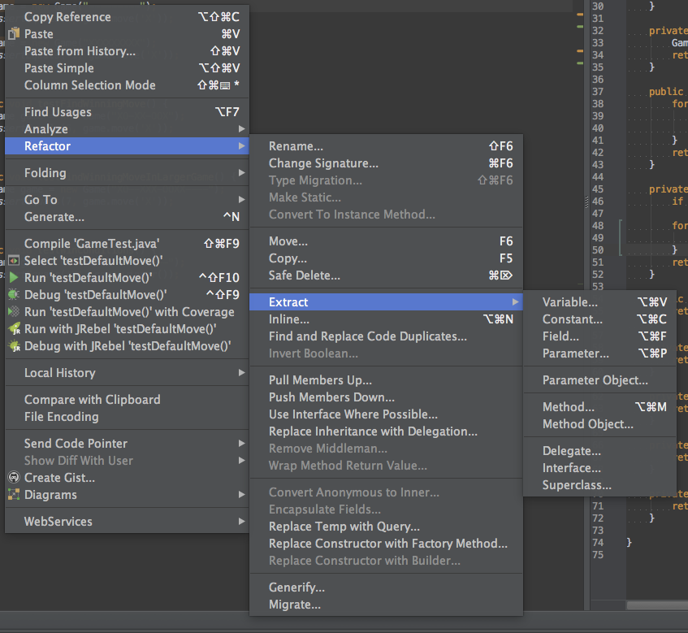

Adapted by Ove Gram Nipen from Terence Parr's lecture notes
Until you've had to live with the same piece of code for a while, you will not experience the need for refactoring. This lecture tries to summarize what refactoring is, when you need to do it, what patterns and tools are available.
These lecture notes paraphrase or quote most content from "Martin Fowler's Refactoring Book". I use keyword "TJP" to indicate my own thoughts. There are large sections of just TJP stuff.
Fowler says that refactoring is the
"... process of changing a software system in such a way that it does not alter the external behavior of the code yet improves its internal structure."
Just cleaning up code.
Contrary to idealized development strategy:
At first, code is pretty good but as requirements change or new features are added, the code structure tends to atrophy. Refactoring is the process of fixing a bad or chaotic design.
Amounts to moving methods around, creating new methods, adding or deleting classes, ...
TJP: Sometimes it means completely redoing the entire code base (i.e., throwing stuff away). Avoid the second system effect!
Improve code structure and design
Cumulative effect can radically improve design rather than normal slide into decay.
Flip-flop code development and refactoring. Only refactor when refactoring--do not add features during refactoring.
TJP: kind of like an immune system that constantly grooms the body looking for offensive and intrusive entities.
Bad code usually takes more code to do the same thing often because of duplication:

TJP: from Fred Brook's "mythical man-month" remember that conceptual integrity is one of his big points. Addition of new features can break current system conceptual integrity. Must refactor your concept sometimes as well as your code to make it fit properly. For example, I integrated page snoopers with search so that I could look for keywords regardless of whether the source was local or on some other page or other some other site's search engine.
Improving design then often includes removing duplicate code. Don't want duplicates because of bloat and also you only want one place to change functionality not multiple.
Fowler says he will refactor existing code just to understand it better and sometimes it helps to find bugs.
In summary, refactoring helps you develop better code, faster!
Kent Beck:
"Programs have two kinds of value: what they can do for you today and what they can do for you tomorrow."
Mostly we are focused on today, but you cannot code today so that you cannot code tomorrow. Actively making the future smoother is a great idea. When you find tomorrow that today you made a mistake, you use refactoring to fix the decision.
Fowler says database refactoring is super hard. See TJP's jGuru example below for entity specifications. :)
When not to refactor?
When you can't stand the code anymore or it becomes impossible to add new features or fix bugs.
When your boss isn't looking. ;) There is a lot of pressure not to do work that adds no functionality--shortsighted.
Rule of 3 from Don Roberts:
"The first time you do something, you just do it. The second time you do something similar, you wince at the duplication, but you do the duplicate thing anyway. The third time you do something similar, you refactor."
Refactor when
Refactor when your code smells. It smells in the following situations.
[From Fowler's book, but summarized at JHU, http://www.cs.jhu.edu/~scott/oos/lectures/refactoring.html ]
Here is a catalog of refactoring patterns:
http://www.refactoring.com/catalog/
Fowler:
"Any fool can write code that a computer can understand. Good programmers write code that humans can understand."
Renaming is a great idea because code should communicate clearly and variable names are super important (imagine a program where everything is v1, v2, ...; that is what obfuscaters do).
IntelliJ and Eclipse are getting quite good at doing refactorings automatically. They perform static code analysis
to stop you from altering the program's meaning unintentionally. However, you may sometimes introduce errors if you
rely blindly on this.
